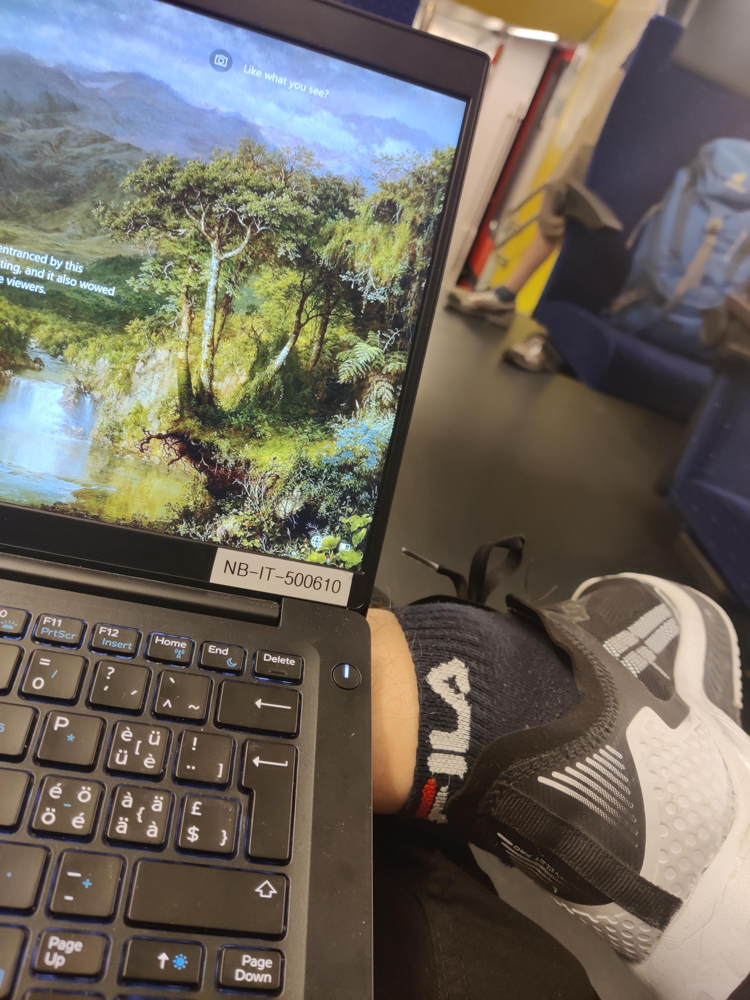

Bild Formate
BMP
Das BMP-Format wurde für das Betriebssystem Microsoft Windows entwickelt und dient dort zur möglichst einfachen, systemnahen Darstellung von Rastergrafiken mit einer Farbtiefe von bis zu 24 bit pro Pixel.
Beachten Sie: Bitmaps im .bmp- oder .tif-Format eignen sich nicht für das World Wide Web, da alle Pixel mit ihrem zugehörigen Farbwert gespeichert werden. Deshalb sind BMP-Dateien sehr viel größer als komprimierte Rastergrafiken.
JPEG oder GIF
Die hohe Anzahl von verschiedenen Farben, die in den meisten Fotos vorzufinden ist, trägt entscheidend zur Auswahl der Dateiformats bei:
das GIF-Format besitzt eine Farbtabelle, welche höchsten 256 Farben aufnehmen kann.
Das bedeutet, dass Sie erstens die Datenmenge nur durch die Reduzierung der Farben verringern können, und zweitens 256 Farben häufig zu wenig für ein ansprechendes Foto sind.
JPEG wiederum speichert mehr Farbinformationen ab, wodurch eine hohe Farbanzahl gewährleistet werden kann. Die eingebaute flexible Komprimierung ermöglicht zusätzlich eine Reduzierung der Dateigröße, ohne große Einschnitte
in der Qualität zu machen.
Kompression vs. Abmessungen
Fotos werden im Allgemeinen als Rastergrafiken abgespeichert, in denen jeder Pixel einen bestimmten Farb- und Helligkeitswert hat. Damit die Datenmengen eines solchen Bitmap-Bildes nicht zu groß wird, werden diese Farbinformationen komprimiert. Das klappt
nicht ganz verlustfrei, ist im allgemeinen aber zu verkraften.
Das JPEG-Foto liefert bei 50% Komprimierung befriedigende Qualität. Die Farbübergänge am Himmel und an der Flagge erscheinen in allen Farben. In quadratischen Bereichen werden die Farbinformationen durch Mittelwertsberechnungen zusammengefasst.
Bei dieser Vergrößerung kann man aber auch deutlich einen der Nachteile von JPEG erkennen: Kanten und harte gerade Übergänge fransen mit zunehmender Komprimierung aus.
Je besser Sie die Qualität einstellen, desto kleiner werden diese
quadratischen Bereiche und desto weniger wird der Nachteil sichtbar.
In Zeiten von pixelgenauen Layouts wurden Bilder auf die benötigten Maße zugeschnitten und mit dem (optionale) Breiten- und Höhenangaben-Attribut ein fester Platz auf
der Webseite freigehalten. Dies ist heute obsolet, da bei hochauflösenden Geräten Bild-Pixel und Geräte-Pixel voneinander abweichen. Deswegen sind passend zugeschnittene Bilder nun oft zu klein und wirken deshalb pixelig.
Empfehlung: Wenn Sie Rastergrafiken in größeren Abmessungen und einer hohen Kompression (30-40%) abspeichern, vermeiden Sie Artefakte und Verpixelungen. Viele Bilder sind aber auch bei einer Kompression von 25% noch akzeptabel.
PNG - Grafiken mit Texten
Bei Texten stößt das JPEG-Format an seine Grenzen. Die Schrift wird unscharf dargestellt und an den Rändern der Buchstaben treten Störungen auf. Hier bietet sich für Rastergrafiken neben dem GIF- auch das
PNG-Format an. PNG kann die gleiche Fülle an Farben darstellen wie JPEG, komprimiert aber verlustfrei. Dafür sind die Bilddateien meist größer als bei JPEG.
Empfehlung: Text sollte nie durch Grafiken ersetzt werden, da er sonst nicht von Suchmaschinen gefunden werden oder markiert werden kann.
* Verwenden Sie Webfonts für abwechslungsreiche und aufsehenerregende Schriftbilder.
* Nutzen Sie die Möglichkeiten von CSS, um Überschriften interessant zu gestalten.
* SVG bietet ebenfalls ansprechende Texteffekte.
WebP
WebP („weppy“) ist ein Datenformat für verlustbehaftet oder verlustfrei komprimierte statische oder animierte Bilder. Es ist ein Schwesterprojekt des Videoformates WebM. WebP erreicht bei sehr hoher Komprimierung mehr Bildqualität pro Datenmenge als JPEG.
AVIF
Das Bildformat AVIF basiert auf der Videokodierung AV1 und wurde ursprünglich für die Videoübertragung im Internet entwickelt. Das AVIF-Format soll eine im Vergleich zu JPEG oder PNG besonders hohe Bildqualität bei hohen Kompressionsraten verfügen. Es
bietet im Gegensatz zu bestehenden Bildformaten Bandbreiteneinsparungen.
Logos und Icons
Kleine Icons aus JPEG- oder GIF-Grafiken wirken auf hochauflösenden Bildschirmen oft pixelig. Daneben sorgt eine Vielzahl von Grafiken für viele http-Requests, die die Ladezeit der Seite erhöhen.
Diagramme und Info-Grafiken können oft
besser mit SVG realisiert werden.
Empfehlung: Erstellen Sie SVG-Icons. Sie sind immer gestochen scharf, skalierbar und können sogar bei größeren Viewport-Größen zusätzliche Details einblenden.
Erstellen Sie die Grafiken in einem Grafikprogramm wie Inkscape
oder Illustrator und optimieren Sie sie.
Beispiele
|
BMP (34.3 MB) |
JPEG (2.3 MB) |
GIF (6.25 MB) |
PNG (13.3 MB) |
|---|---|---|---|

|
 |

|

|
{kind=link}